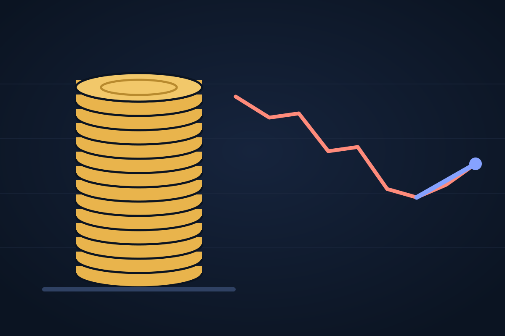

Edition 3, Tuesday 20 October 2026
OpenAI seeks about $30 billion as chip stocks snap their eight-day slide
Reuters reports OpenAI is racing to raise money at a valuation above $1.4 trillion before Anthropic's planned listing next month; chip stocks rose 1.6% on Monday.

The fundraising
OpenAI is moving unusually fast to raise about $30 billion at a valuation that could top $1.4 trillion, Reuters reported on Monday, citing two people familiar with the matter, according to PYMNTS. Existing investors SoftBank and Abu Dhabi's MGX are in talks, and the company met long-only funds and sovereign wealth funds last week.
Investors cited three reasons: to cash in on growth after new model launches, including GPT-6 on 7 October; to secure money for its infrastructure commitments in case a weaker market delays its own planned listing; and to take capital that might otherwise go to Anthropic, which plans to go public next month. The talks are not a closed deal.
The markets
Chip stocks bounced on Monday. The Philadelphia semiconductor index rose 1.6%, ending eight straight losing sessions, its longest streak since October 2008. Intel rose after a JPMorgan upgrade and Micron also gained, and a 60-stock chip basket was regaining nearly $250 billion of value by mid-morning, Yahoo Finance reported, even as most of the S&P 500 fell. CoreWeave rose as much as 7.4% after a Goldman Sachs upgrade but ended slightly lower amid worries about financing its build-out.
The relief did not carry into Asia. On Tuesday South Korea's KOSPI was down more than 2% by late morning, with SK Hynix off 3.6%, and SoftBank fell about 3.3% in Tokyo on doubts about AI funding, Invezz reports.
What comes next
Meta and Tesla report results on Wednesday, the first big look this earnings season at how much the largest buyers still plan to spend on AI computing.
Why it matters
The biggest AI labs are competing for the same pool of capital at the same time, just as investors have started to charge more for the risk. Monday's rebound was modest; the earnings of the big spenders this week matter more.
Sources
- OpenAI Racing to Raise $30 Billion Ahead of Anthropic ListingPYMNTS
- PHLX Semiconductor Sector Index Ends Eight-Session Slide With 1.6% GainTokenPost
- Micron, Intel lead chip recovery, adding nearly $250B as most of Wall Street falls: Chart of the DayYahoo Finance
- Here's why KOSPI and Nikkei 225 are falling sharply on October 20Invezz
Earlier in this story
- Monday 19 October 2026Chip stocks suffer their longest slide since 2008 as AI debt gets dearer
- Sunday 18 October 2026The AI build-out is running on more expensive debt